{{CSSRef}}
One of the reasons that flexbox quickly caught the interest of web developers is that it brought proper alignment capabilities to the web for the first time. It enabled proper vertical alignment, so we can at last easily center a box. In this guide, we will take a thorough look at how the alignment and justification properties work in Flexbox.
To center our box we use the align-items property to align our item on the cross axis, which in this case is the block axis running vertically. We use justify-content to align the item on the main axis, which in this case the inline axis running horizontally.
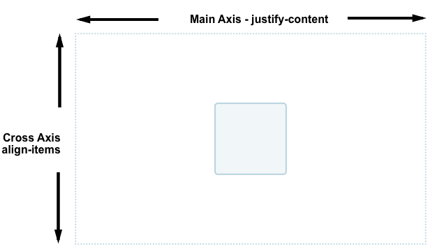
You can take a look at the code of this example below. Change the size of the container or nested element and the nested element always remains centered.
{{EmbedGHLiveSample("css-examples/flexbox/alignment/intro.html", '100%', 700)}}
The properties we will look at in this guide are as follows.
We will also discover how auto margins can be used for alignment in flexbox.
The align-items and align-self properties control alignment of our flex items on the cross axis, down the columns if flex-direction is row and along the row if flex-direction is column.
We are making use of cross-axis alignment in the most simple flex example. If we add display: flex to a container, the child items all become flex items arranged in a row. They will all stretch to be as tall as the tallest item, as that item is defining the height of the items on the cross axis. If your flex container has a height set, then the items will stretch to that height, regardless of how much content is in the item.
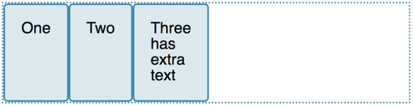
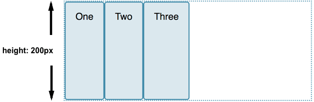
The reason the items become the same height is that the initial value of align-items, the property that controls alignment on the cross axis, is set to stretch.
We can use other values to control how the items align:
align-items: flex-startalign-items: flex-endalign-items: centeralign-items: stretchalign-items: baselineIn the live example below, the value of align-items is stretch. Try the other values and see how all of the items align against each other in the flex container.
{{EmbedGHLiveSample("css-examples/flexbox/alignment/align-items.html", '100%', 520)}}
align-selfThe align-items property sets the align-self property on all of the flex items as a group. This means you can explicitly declare the align-self property to target a single item. The align-self property accepts all of the same values as align-items plus a value of auto, which will reset the value to that which is defined on the flex container.
In this next live example, the flex container has align-items: flex-start, which means the items are all aligned to the start of the cross axis. I have targeted the first item using a first-child selector and set that item to align-self: stretch; another item has been selected using its class of selected and given align-self: center. You can change the value of align-items or change the values of align-self on the individual items to see how this works.
{{EmbedGHLiveSample("css-examples/flexbox/alignment/align-self.html", '100%', 650)}}
So far we have looked at the behavior when our flex-direction is row, and while working in a language written top to bottom. This means that the main axis runs along the row horizontally, and our cross axis alignment moves the items up and down.
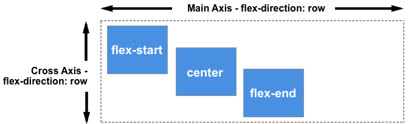
If we change our flex-direction to column, align-items and align-self will align the items to the left and right.
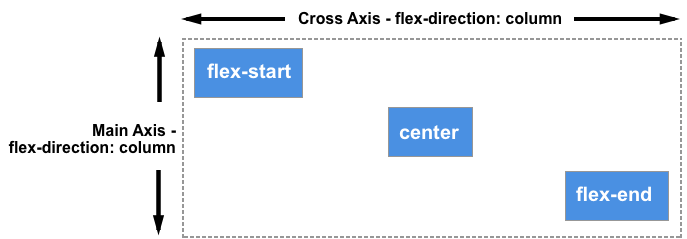
You can try this out in the example below, which has a flex container with flex-direction: column yet otherwise is exactly the same as the previous example.
{{EmbedGHLiveSample("css-examples/flexbox/alignment/align-self-column.html", '100%', 730)}}
So far we have been aligning the items, or an individual item inside the area defined by the flex-container. If you have a wrapped multiple-line flex container then you might also want to use the align-content property to control the distribution of space between the rows. In the specification this is described as packing flex lines.
For align-content to work you need more height in your flex container than is required to display the items. It then works on all the items as a set, and dictates what happens with that free space, and the alignment of the entire set of items within it.
The align-content property takes the following values:
align-content: flex-startalign-content: flex-endalign-content: centeralign-content: space-betweenalign-content: space-aroundalign-content: stretchalign-content: space-evenly (not defined in the Flexbox specification)In the live example below, the flex container has a height of 400 pixels, which is more than needed to display our items. The value of align-content is space-between, which means that the available space is shared out between the flex lines, which are placed flush with the start and end of the container on the cross axis.
Try out the other values to see how the align-content property works.
{{EmbedGHLiveSample("css-examples/flexbox/alignment/align-content.html", '100%', 850)}}
Once again we can switch our flex-direction to column in order to see how this property behaves when we are working by column. As before, we need enough space in the cross axis to have some free space after displaying all of the items.
{{EmbedGHLiveSample("css-examples/flexbox/alignment/align-content-column.html", '100%', 860)}}
Note: the value space-evenly is not defined in the flexbox specification and is a later addition to the Box Alignment specification. Browser support for this value is not as good as that of the values defined in the flexbox spec.
See the documentation for justify-content on MDN for more details on all of these values and browser support.
Now that we have seen how alignment works on the cross axis, we can take a look at the main axis. Here we only have one property available to us — justify-content. This is because we are only dealing with items as a group on the main axis. With justify-content we control what happens with available space, should there be more space than is needed to display the items.
In our initial example with display: flex on the container, the items display as a row and all line up at the start of the container. This is due to the initial value of justify-content being flex-start. Any available space is placed at the end of the items.
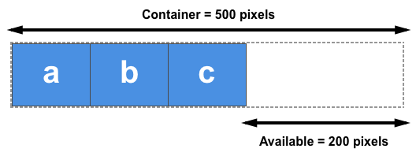
The justify-content property accepts the same values as align-content.
justify-content: flex-startjustify-content: flex-endjustify-content: centerjustify-content: space-betweenjustify-content: space-aroundjustify-content: space-evenly (not defined in the Flexbox specification)In the example below, the value of justify-content is space-between. The available space after displaying the items is distributed between the items. The left and right item line up flush with the start and end.
{{EmbedGHLiveSample("css-examples/flexbox/alignment/justify-content.html", '100%', 480)}}
If the main axis is in the block direction because flex-direction is set to column, then justify-content will distribute space between items in that dimension as long as there is space in the flex container to distribute.
{{EmbedGHLiveSample("css-examples/flexbox/alignment/justify-content-column.html", '100%', 880)}}
Remember that with all of these alignment methods, the values of flex-start and flex-end are writing mode-aware. If the value of justify-content is start and the writing mode is left-to-right as in English, the items will line up starting at the left side of the container.
However if the writing mode is right-to-left as in Arabic, the items will line up starting at the right side of the container.
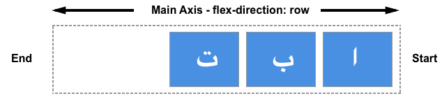
The live example below has the direction property set to rtl to force a right-to-left flow for our items. You can remove this, or change the values of justify-content to see how flexbox behaves when the start of the inline direction is on the right.
{{EmbedGHLiveSample("css-examples/flexbox/alignment/justify-content-writing-mode.html", '100%', 440)}}
The start line will also change if you change the flex-direction property — for example using row-reverse instead of row.
In this next example I have items laid out with flex-direction: row-reverse and justify-content: flex-end. In a left to right language the items all line up on the left. Try changing flex-direction: row-reverse to flex-direction: row. You will see that the items now move to the right hand side.
{{EmbedGHLiveSample("css-examples/flexbox/alignment/justify-content-reverse.html", '100%', 440)}}
While this may all seem a little confusing, the rule to remember is that unless you do something to change it, flex items lay themselves out in the direction that words are laid out in the language of your document along the inline, row axis. flex-start will be where the start of a sentence of text would begin.
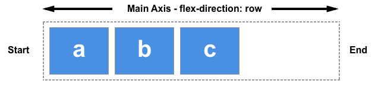
You can switch them to display in the block direction for the language of your document by selecting flex-direction: column. Then flex-start will then be where the top of your first paragraph of text would start.
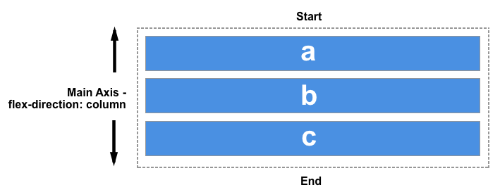
If you change flex-direction to one of the reverse values, then they will lay themselves out from the end axis and in the reverse order to the way words are written in the language of your document. flex-start will then change to the end of that axis — so to the location where your lines would wrap if working in rows, or at the end of your last paragraph of text in the block direction.
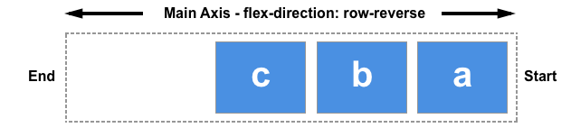
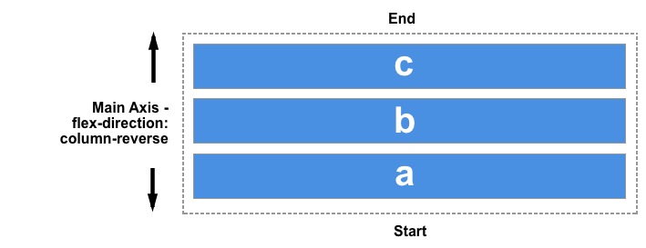
We don’t have a justify-items or justify-self property available to us on the main axis as our items are treated as a group on that axis. However it is possible to do some individual alignment in order to separate an item or a group of items from others by using auto margins along with flexbox.
A common pattern is a navigation bar where some key items are aligned to the right, with the main group on the left. You might think that this should be a use case for a justify-self property, however consider the image below. I have three items on one side and two on the other. If I were able to use justify-self on item d, it would also change the alignment of item e that follows, which may or may not be my intention.
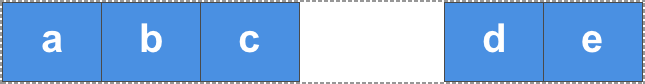
Instead we can target item 4 and separate it from the first three items by giving it a margin-left value of auto. Auto margins will take up all of the space that they can in their axis — it is how centering a block with margin auto left and right works. Each side tries to take as much space as it can, and so the block is pushed into the middle.
In this live example, I have flex items arranged into a row with the basic flex values, and the class push has margin-left: auto. You can try removing this, or adding the class to another item to see how it works.
{{EmbedGHLiveSample("css-examples/flexbox/alignment/auto-margins.html", '100%', 470)}}
To create a gap between flex items, use the {{cssxref("gap")}}, {{cssxref("column-gap")}}, and {{cssxref("row-gap")}} properties. The {{cssxref("column-gap")}} property creates gaps between items on the main axis. The {{cssxref("row-gap")}} property creates gaps between flex lines, when you have {{cssxref("flex-wrap")}} set to wrap. The {{cssxref("gap")}} property is a shorthand that sets both together.
{{EmbedGHLiveSample("css-examples/box-alignment/flexbox/gap.html", '100%', 700)}}